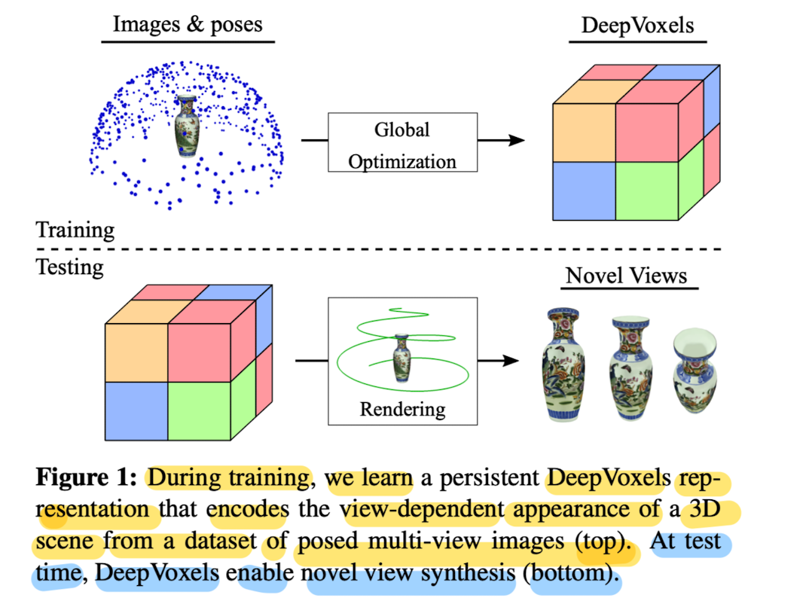
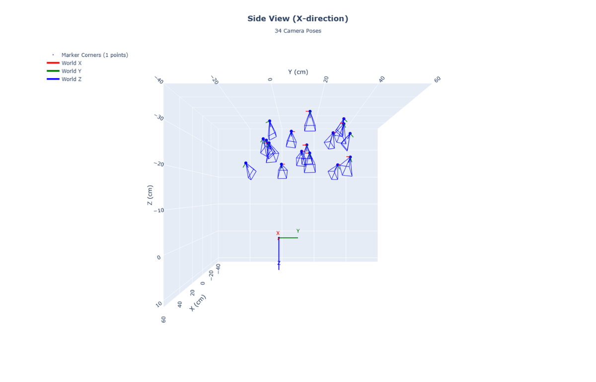
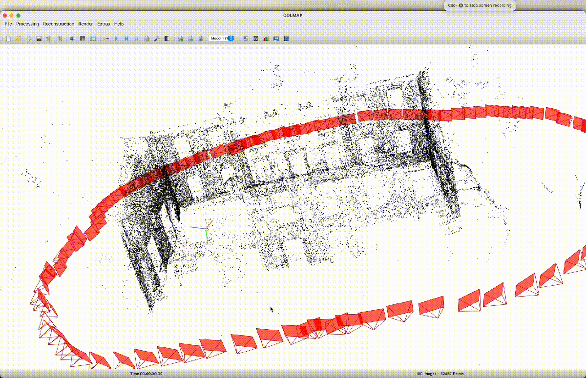
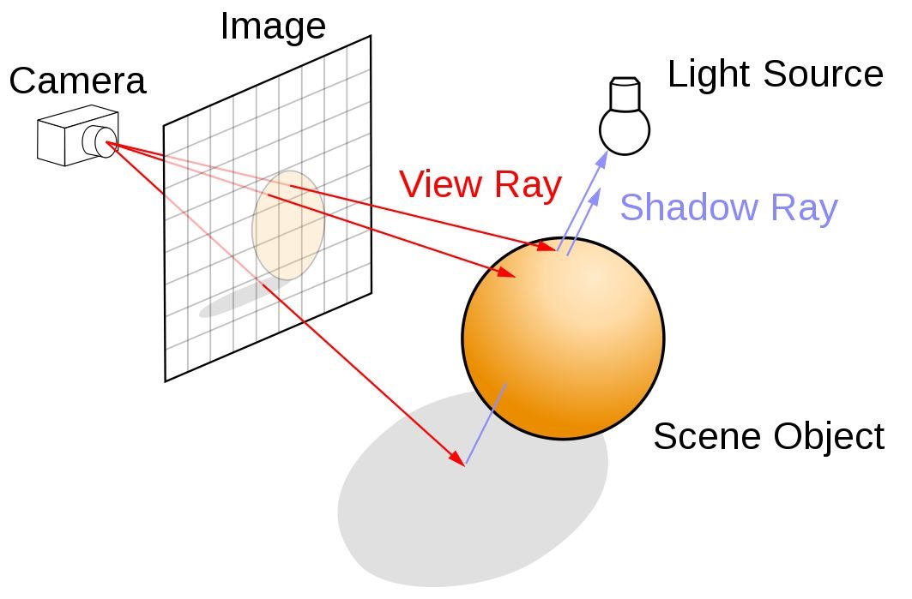
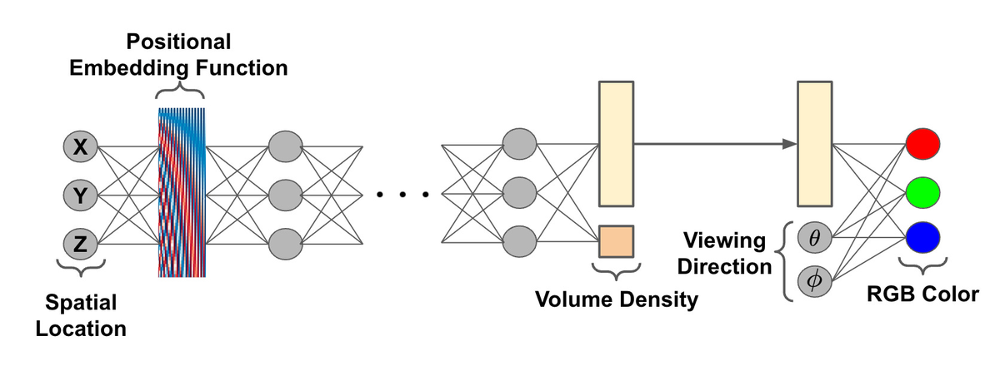
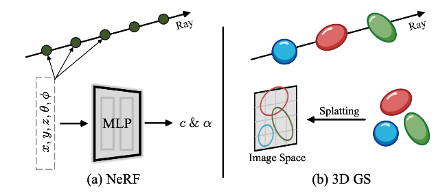
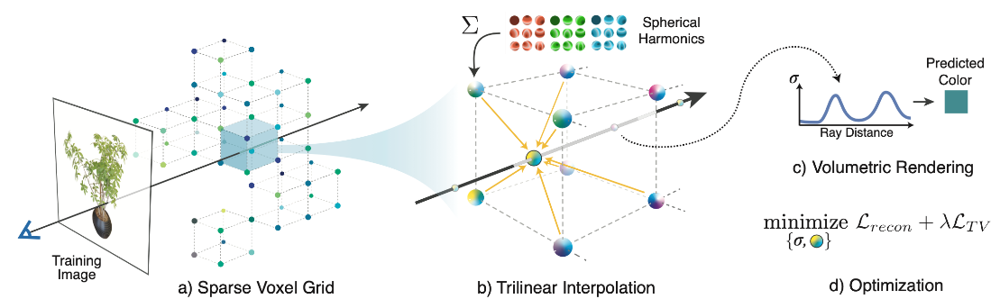
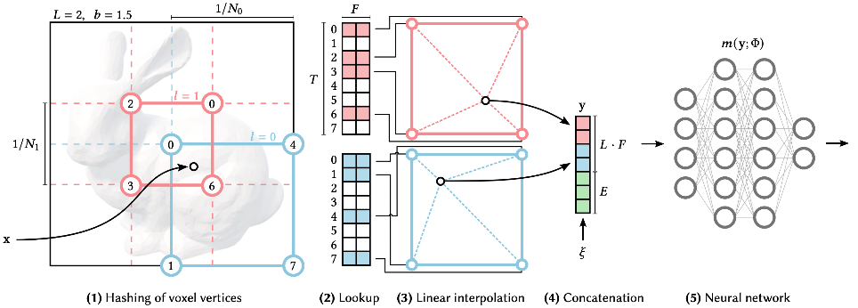

9A. Neural Radiance Fields (NeRF)
Inverse rendering, volume rendering equation, ray marching, positional encoding, hierarchical sampling
1. 3D Representation Formats
NeRF is best understood in the context of the 3D representations it replaces. Four main explicit formats exist, each with different trade-offs.

Voxels
A voxel is a volumetric pixel — a small cube in a regular 3D grid storing a value (occupancy, color, density). Intuitive and easy to work with, but memory-hungry: a 512×512×512 grid with a single float per voxel requires ∼512 MB.
Meshes (Polygonal Models)
A mesh is a collection of vertices, edges, and faces (usually triangles) defining a surface. GPUs are designed for mesh rendering, making it the fastest option. However, creating meshes from sensor data is time-consuming.
Point Clouds
A set of 3D points $(x, y, z)$ with optional color and normals. Easy to acquire from depth sensors and Structure-from-Motion, but do not define surfaces explicitly and are difficult to convert to meshes.
Octrees
A tree structure that recursively subdivides 3D space into eight octants, only allocating memory where detail exists. Low memory footprint but requires additional processing when updating the model.
| Format | Pros | Cons |
|---|---|---|
| Voxels | Easy to aggregate sensor data, volumetric | Very high memory, no GPU render hardware |
| Meshes | GPU hardware rendering, compact | Hard to create from sensor data |
| Point Clouds | Easy from depth sensors, many tools | No surface information, high memory |
| Octrees | Low memory, volumetric | Complex to update, no GPU hardware |
| NeRF (implicit) | Compact (<10 MB), continuous, differentiable | Slow to query, hard to edit |
2. Rendering vs Inverse Rendering
Forward Rendering
Takes a 3D model and produces a 2D image. Direction: 3D model → 2D image. This is the classical computer graphics problem (video games, CGI movies). It is well-defined: given scene parameters, produce an image.
Inverse Rendering
Takes 2D images and recovers the 3D scene that produced them. Direction: 2D images → 3D model. This is fundamentally ill-posed: many possible 3D scenes can produce the same 2D images. NeRF makes this tractable by:
- Choosing a flexible implicit 3D representation (an MLP)
- Making the forward rendering process differentiable
- Optimizing the MLP weights to minimize the difference between rendered and real images

3. Getting Camera Poses
Inverse rendering requires knowing where each training image was taken from — the camera position and orientation in 3D space. Two approaches are used in practice.
ArUco Markers
Square, high-contrast fiducial tags with unique binary patterns placed in the scene. Computer vision algorithms detect them and compute camera calibration automatically.

| ArUco Markers | Structure-from-Motion (COLMAP) | |
|---|---|---|
| Pros | Fast, reliable, unique IDs | Works in the wild, no markers needed |
| Cons | Must populate scene with markers, inefficient for large scenes | Computationally intensive, requires multiple images |
Structure-from-Motion (SfM) — COLMAP
Uses SfM to automatically recover camera poses from images by matching features across views and triangulating them into 3D. COLMAP is the standard tool in the NeRF pipeline for in-the-wild photo collections.

4. Volume Rendering — Continuous Form
NeRF uses volume rendering, not surface ray tracing. In volume rendering, the ray does not hit a surface and stop — it passes through a continuous medium with varying density and color. There is no explicit surface, only continuously varying density $\sigma$ and color $c$.
The Volume Rendering Equation
The color of a pixel (ray $\mathbf{r}$) is computed by integrating along the ray from the near plane $t_n$ to the far plane $t_f$:
$c(\mathbf{r}(t), \mathbf{d})$ — Radiance (color) at position $\mathbf{r}(t)$ viewed from direction $\mathbf{d}$. Depends on both position and viewing direction (models specular highlights, reflections).
$\sigma(\mathbf{r}(t))$ — Volume density at position $\mathbf{r}(t)$. A non-negative scalar: how "opaque" the medium is. Does NOT depend on viewing direction — geometry is view-independent. $\sigma = 0$ means empty space; $\sigma \to \infty$ means solid surface.
$T(t) = \exp\!\left(-\int_{t_n}^{t} \sigma(\mathbf{r}(s)) \, ds\right)$ — Transmittance. The probability the ray travels from $t_n$ to depth $t$ without being absorbed. Starts at 1, decreases monotonically toward 0 as density accumulates.

5. Volume Rendering — Discrete Approximation
The continuous integral cannot be computed analytically for an arbitrary neural network. We approximate it by sampling $N$ points along the ray and summing their contributions.
$$\hat{C}(\mathbf{r}) \approx \sum_{i=1}^{N} T_i \cdot \alpha_i \cdot \mathbf{c}_i$$
Discrete opacity: $\alpha_i = 1 - e^{-\sigma_i \cdot \delta_i}$ where $\delta_i = t_{i+1} - t_i$ is the step size.
Discrete transmittance: $T_i = \prod_{j=1}^{i-1} (1 - \alpha_j)$
| Continuous | Discrete |
|---|---|
| $\int_{t_n}^{t_f} \ldots \, dt$ | $\sum_{i=1}^{N} \ldots$ |
| $\sigma(\mathbf{r}(t)) \, dt$ | $\alpha_i = 1 - e^{-\sigma_i \delta_i}$ |
| $T(t) = \exp\!\left(-\int_{t_n}^{t} \sigma \, ds\right)$ | $T_i = \prod_{j=1}^{i-1}(1-\alpha_j)$ |
| $c(\mathbf{r}(t), \mathbf{d})$ | $\mathbf{c}_i$ |
$\alpha_i = 1 - e^{-\sigma_i \delta_i}$ is derived from the Beer-Lambert law of light absorption.
- When $\sigma_i = 0$ (empty space): $\alpha_i = 1 - e^0 = 0$ (fully transparent)
- When $\sigma_i \to \infty$ (solid surface): $\alpha_i \to 1$ (fully opaque)
- Larger step size $\delta_i$ accumulates more opacity, even at low density
The weight of sample $i$ in the final color is $w_i = T_i \cdot \alpha_i$, representing the probability that sample $i$ is the one that "stops" the ray. The weights satisfy $\sum_i w_i \leq 1$, peaking near surfaces.
6. NeRF Architecture
Instead of storing an explicit 3D representation, NeRF encodes the scene in the weights of a Multi-Layer Perceptron (MLP). Any continuous 3D coordinate and viewing direction can be queried to get color and density at that point.
Input $\mathbf{x} = (x, y, z)$: 3D spatial location. Input $\mathbf{d} = (\phi, \theta)$: viewing direction. Output $\mathbf{c} = (R, G, B)$: color. Output $\sigma$: volume density. $\Theta$: learnable weights.
Critical Architectural Design Choice
Density $\sigma$ depends ONLY on spatial location $(x, y, z)$. Geometry must be view-consistent: an object should exist at the same location regardless of which direction you look from. If density depended on viewing direction, objects would appear or disappear with viewpoint, causing multi-view inconsistency.
Color $\mathbf{c}$ depends on BOTH location AND viewing direction. Appearance can be view-dependent: specular highlights, reflections, and Fresnel effects cause the same surface point to look different from different angles.

- Spatial location $(x, y, z)$ → Positional encoding $\gamma(x, y, z)$
- Encoded position → 8 fully-connected layers (256 channels each, ReLU activations)
- After 8 layers: branch outputs volume density $\sigma$ directly (not view-dependent)
- Feature vector from MLP is concatenated with encoded viewing direction $(\phi, \theta)$
- Additional fully-connected layer(s) → RGB color $\mathbf{c}$
This late injection of the viewing direction ensures the density branch never sees the direction, enforcing geometric view-consistency.
Rendering a Single Pixel
- Cast a ray $\mathbf{r}(t) = \mathbf{o} + t\mathbf{d}$ from the camera through the pixel
- Sample $N$ points $(x_1, \ldots, x_N)$ along the ray between near and far bounds
- Apply positional encoding to each sample and the viewing direction
- Query the MLP at each sample: get $(\mathbf{c}_i, \sigma_i)$
- Compute $\alpha_i = 1 - e^{-\sigma_i \delta_i}$ and $T_i = \prod_{j < i}(1 - \alpha_j)$
- Composite: $\hat{C}(\mathbf{r}) = \sum_i T_i \alpha_i \mathbf{c}_i$

7. Positional Encoding
The Problem: Spectral Bias
Standard MLPs have a spectral bias: they naturally learn low-frequency (smooth) functions first and struggle to represent high-frequency variations. Even when trained with 10× more parameters than there are pixels, a naive MLP produces blurry results lacking fine details.
The Solution: Fourier Feature Mapping
For each input coordinate $p$ (any of $x$, $y$, $z$), apply the positional encoding:
Each coordinate maps from 1 dimension to $2N$ dimensions. NeRF uses $N=10$ for spatial coordinates (giving 60 dimensions per coordinate, 180 total for position) and $N=4$ for viewing direction.
| Frequency range | Role |
|---|---|
| Low ($2^0, 2^1$) | Vary slowly in space; capture large-scale structure and overall shape |
| High ($2^{N-2}, 2^{N-1}$) | Vary rapidly; capture fine details, sharp edges, and textures |
In the original space, two nearby points $p$ and $p + \epsilon$ differ by $\epsilon$ (tiny). After encoding at frequency $2^k$: $\sin(2^k \pi p)$ vs $\sin(2^k \pi (p + \epsilon))$. For high $k$, even tiny $\epsilon$ produces large differences in the encoded values. The MLP can then easily learn to distinguish nearby points. This is closely related to random Fourier features and Fourier feature mappings from the machine learning literature.
8. Hierarchical Sampling
Uniform sampling along a ray is wasteful: most of the ray passes through empty space where $\sigma = 0$ and the MLP contribution is zero. A thin surface might be missed if no sample lands on it. Hierarchical sampling fixes this.
Stage 1: Coarse Sampling
- Sample $N_\text{coarse}$ points uniformly along the ray
- Evaluate the coarse network to get weights $w_i = T_i \cdot \alpha_i$
- Normalize weights to create a probability density function (PDF): $\hat{w}_i = w_i / \sum_j w_j$
- This PDF identifies where density (and thus surfaces) is concentrated
Stage 2: Fine Sampling
- Sample $N_\text{fine}$ additional points from the PDF using inverse transform sampling
- New samples concentrate near regions of high predicted density (surfaces)
- The fine network evaluates ALL $N_\text{coarse} + N_\text{fine}$ points for the final color estimate
9. Training and Loss
Training Procedure
- Select a random batch of pixels from training images (with known camera poses)
- For each pixel: construct the ray, sample points, query MLP, volume render → predicted color $\hat{C}(\mathbf{r})$
- Compare predicted vs ground-truth pixel color with the loss
- Backpropagate gradients through the entire differentiable pipeline
- Update MLP weights $\Theta$ via gradient descent (Adam optimizer)
$R$ = set of rays (pixels) in the batch; $\hat{C}(\mathbf{r})$ = predicted color; $C(\mathbf{r})$ = ground-truth color. Simple but effective: every pixel provides a training signal, and the rendering equation imposes strong physical priors.
The L2 loss is sufficient because (1) every pixel provides direct supervision through the volume rendering equation; (2) the differentiable pipeline ensures gradients flow from pixel colors back to 3D predictions; (3) with many images from different viewpoints, the system is heavily over-constrained — the only 3D structure consistent across all views is the correct one; (4) the rendering equation itself imposes physical priors (occlusion, view-consistency).
10. Limitations and Variants
Vanilla NeRF Limitations
| Limitation | Description |
|---|---|
| Transient objects | Cannot handle moving objects in training images (people, cars) |
| Appearance changes | Cannot handle lighting/color changes across training images |
| Unbounded scenes | Cannot represent scenes extending to infinity (outdoor environments) |
| Extremely slow | $1080 \times 1920 \times 100 \times 100 = 20.7$ billion MLP evaluations per iteration |
Key NeRF Variants
Handles internet photos with varying lighting and transient objects. Adds per-image appearance embeddings (for lighting/color changes) and transient embeddings (for temporary occluders like tourists). Produces photorealistic landmark views from unstructured photo collections.
Addresses aliasing and unbounded scenes. Renders conical frustums instead of infinitesimally thin rays, reducing blurring and aliasing. Uses a scene contraction function to map unbounded 3D space into a bounded region, enabling 360-degree outdoor scenes.
Replaces the MLP entirely with a sparse 3D voxel grid storing spherical harmonics coefficients. No neural network needed at all. The pipeline: Sparse Voxel Grid → Trilinear Interpolation → Spherical Harmonics → Volume Rendering → Optimization. Much faster than NeRF because there is no MLP forward pass.

Models the radiance field as factorized tensors: low-rank decomposition of the 3D volume. More memory-efficient than full voxel grids while being faster than MLPs.
Introduces a multiresolution hash encoding: replaces the slow sinusoidal positional encoding with a learned hash table at multiple resolutions. Voxel vertices at each resolution are hashed to feature vectors; features are concatenated and fed into a small MLP. Achieves near-real-time training (seconds to minutes vs hours for vanilla NeRF).

| Method | Addresses | Key Technique |
|---|---|---|
| NeRF-W | Transient objects, appearance changes | Per-image appearance/transient embeddings |
| Mip-NeRF 360 | Aliasing, unbounded scenes | Cone tracing + scene contraction |
| Plenoxels | Speed | Sparse voxel grid + spherical harmonics (no MLP) |
| TensoRF | Speed + memory | Factorized tensor decomposition |
| Instant-NGP | Speed | Multiresolution hash encoding |